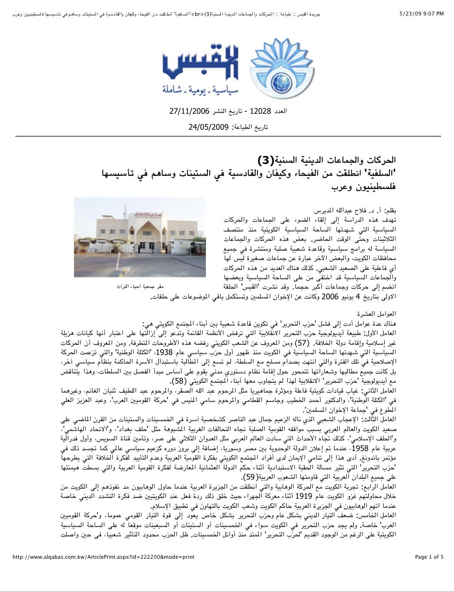
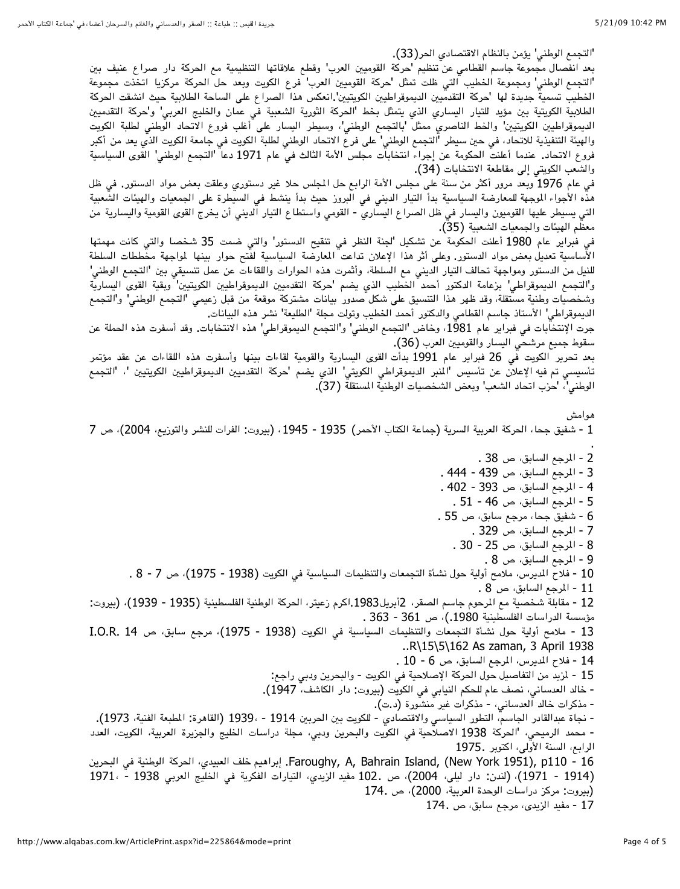
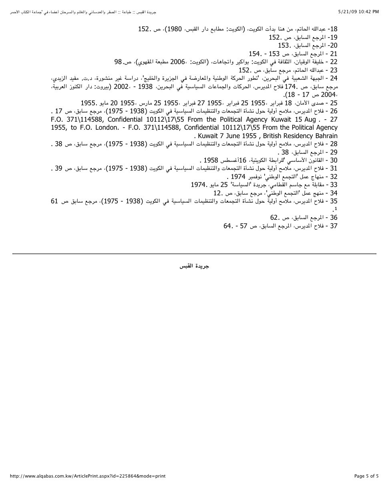

November and December 2006 · Newspaper pages, Al-Qabas, series «Political Movements and Groups in Kuwait» by Prof. Dr Falah Abdullah Al-Mudairis, 2006, printed from the paper’s website
Al-Qabas, 2006: Jassim Al-Qatami in Dr Falah Al-Mudairis’s series on Kuwait’s political movements
What it is
1. The Kuwaiti League, founded in 1958 by merchants and intellectuals including Dr Ahmad Al-Khatib, Jassim Al-Qatami, Abdullatif Thunayan Al-Ghanim and Abdulaziz Al-Saqr, elected a committee of seven, which chose Jassim Al-Qatami as its secretary. 2. The National Rally was founded in the early 1970s by Jassim Al-Qatami after his group left the Arab Nationalist Movement; it called for peaceful reform, democracy and respect for the Constitution, and in 1980 Al-Qatami and Dr Ahmad Al-Khatib issued joint statements published by Al-Tali‘a. 3. The notes cite an interview with Jassim Al-Qatami in Al-Siyasa, 25 May 1974, and list him among the 32 members of the 1985 National Assembly. 4. Part 3 names Jassim Al-Qatami with Dr Ahmad Al-Khatib among the leaders of the National Bloc and the Arab Nationalist Movement.
Why it matters
A historian’s account of Jassim Abdulaziz Al-Qatami’s place in Kuwait’s national movement, from the Kuwaiti League of 1958 to the National Rally and the 1985 Assembly.
Page copies





Sources
Prof. Dr Falah Abdullah Al-Mudairis, «Political Movements and Groups in Kuwait», Al-Qabas, 2006: part 3, issue 12028, 27 November 2006; and the articles printed from alqabas.com.kw with ids 225864 and 225989
How this text was made: For the two later articles, the first page with the issue number and date was not sent. The opening of the series (part 1, issue 11854, 4 June 2006) does not name the family, so it is not shown.
Open in the interactive site